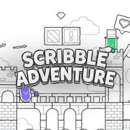

2D Platformer Starter - โปรเจกต์เกมแพลตฟอร์ม 2D ที่พัฒนาด้วย Godot Engine
เกมตัวอย่างแพลตฟอร์ม 2D สำหรับรายวิชา Computer Game Development พัฒนาด้วย Godot Engine และรันได้โดยตรงผ่านเว็บเบราว์เซอร์ (Godot Web Export)
